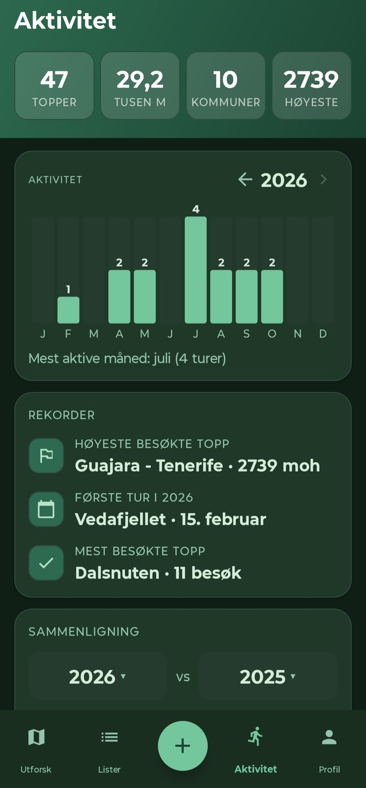
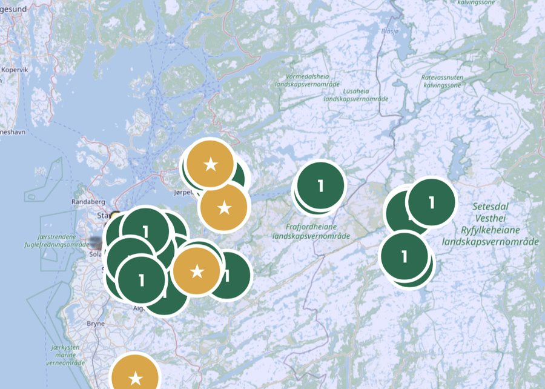
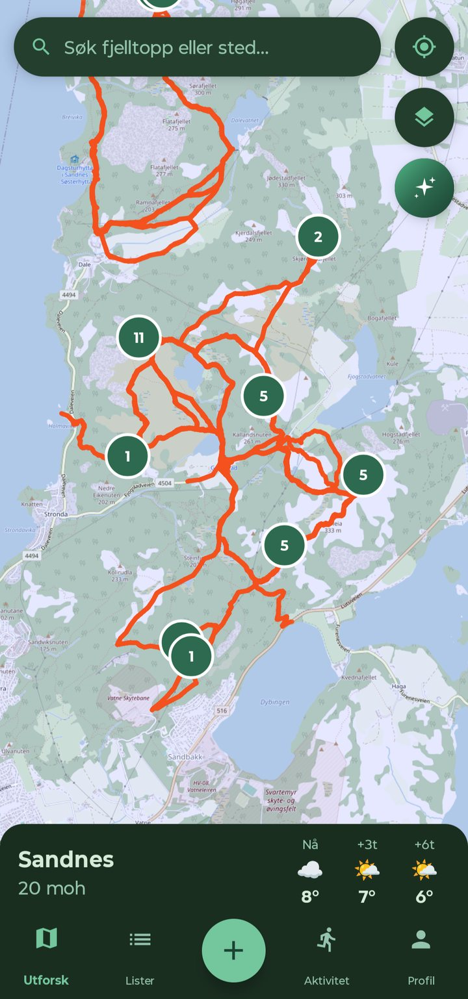
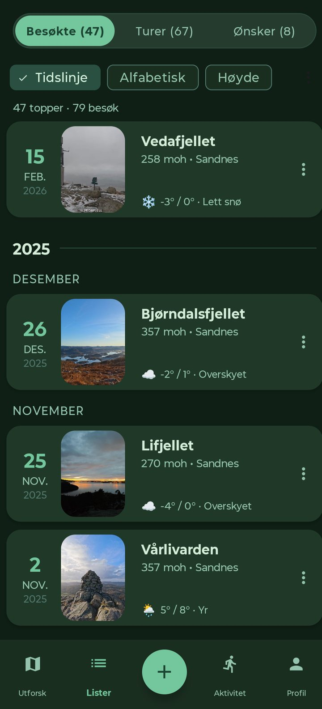
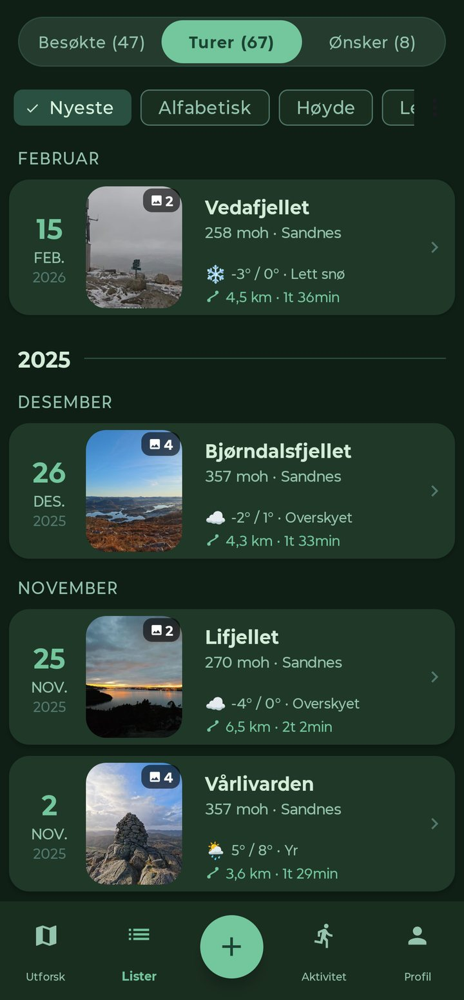
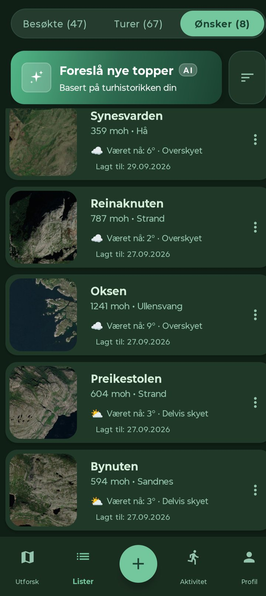

Fjelltoppene er en personlig turbok i lomma. Logg toppene du har gått, importer turene fra Strava eller Garmin, se rutene på kartet og del turen som bilde — fra Dalsnuten til Galdhøpiggen.

Appen er bygget for å være ute av veien. Du finner topper, registrerer turen, og lar appen ta seg av resten.
Bla i kartet, søk etter navn eller område, eller bruk plasseringen din for å se hvilke topper som ligger i nærheten.
Trykk på pluss-knappen når du står på toppen, eller importer turen fra Strava eller en GPX-fil. Tid, vær, høyde og koordinater fylles inn automatisk.
Sett deg et egenmål for året, følg statistikken måned for måned, og se rekorder, høyder og kommuner du har besøkt.
Designet for norske forhold — fra dagstur i nærskogen til langhelger på vidda.
Alle norske topper i ett kart. Klynger viser hvor mange du har vært på i et område, og stjerner markerer ønskelistetopper. Bytt til satellittbilder, eller vis rutene dine.

Se hvilke måneder du var mest aktiv, høyeste topp, første tur i året og mest besøkte fjell.
Hold rede på topper du har vært på, og lagre drømmetoppene dine til senere.
Sjekk nåværende vær og prognose før du legger ut, direkte i toppvisningen.
Last ned alt som CSV, GPX eller ZIP, eller ta sikkerhetskopi til Google Drive — turboka er din, alltid.
Importer turer fra Strava eller GPX-filer fra Garmin. Ruten tegnes på kartet, og bildene dine ligger som miniatyrer langs veien.
Kartlaget «Mine turer» viser alle rutene dine samtidig. Trykk på en linje for å åpne turen. Bytt mellom topografisk kart og satellitt.
Appen foreslår bilder tatt i turens tidsrom, og henter med bildene fra Strava-aktiviteten. Velg hovedbilde for hver tur og hver topp.
Velg hva som står på bildet — navn, høyde, kommune, dato og vær — og hvor teksten skal ligge. Fire bildeformater for story, feed og Facebook.
På bred skjerm ligger kartet fast til venstre og appen til høyre. Layouten følger med når du folder ut eller inn, og kartet kan vises i fullskjerm.
Spør om topper, vær og turene dine med vanlig språk, og få forslag til turbeskrivelser. Valgfritt, og en del av Fjelltoppene Premium.
Fjelltoppene oppdateres jevnlig. Her er de siste versjonene.
• Støtte for foldbare telefoner og nettbrett: kartet ligger fast til venstre og appen til høyre
• Navigasjonen tilpasser seg skjermbredden, også når du folder ut eller inn
• Kartet kan vises i fullskjerm
• Rutenett og lister tilpasser antall kolonner til skjermen
• Fikset plasseringen av «Legg til»-knappen
• Nytt kartlag «Mine turer» — trykk på en tur for å åpne den
• Del bilde: velg info, vær, plassering og format (9:16, 4:5, 1:1)
• Bilder fra Strava importeres sammen med turen
• Ny bildevelger som foreslår bilder fra turens tidsrom
• Rullefelt med måned og år i listene
• Bildeminiatyrer på turkartet
• Bilder på turer vises i rutenett med galleri
• Valgt turbilde vises også på Besøkte-siden
• Fikset krasj ved søk og tilbakemelding, og «Vis på kart»
• Import av turer fra Strava og GPX
• Ny Turer-fane med kart, rute og bilder langs veien
• Turer med flere fjelltopper (traverser)
• Satellittbilder på kartet
• Fjelltoppene Premium med AI-assistent
• Bilder i fullskjerm og nytt vær-overlegg
Egenmål gir deg et tall å sikte mot — 20, 30, 50 topper. Appen viser hvor mange du har igjen, hvor stor andel som er fullført, og hvilke turer som teller mot målet.
Kom i gang gratisStort skriftsnitt og tydelige knapper — også med våte hender og solbriller på toppen. Følger systemets lyse eller mørke tema.




Fjelltoppene er tilgjengelig på Google Play for Android.